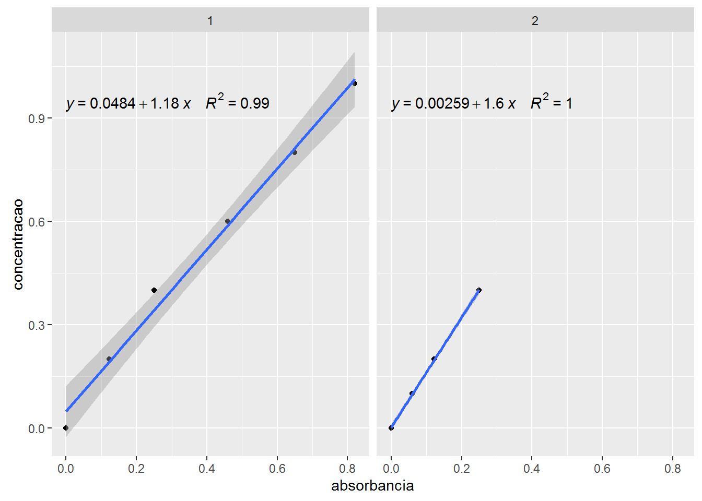
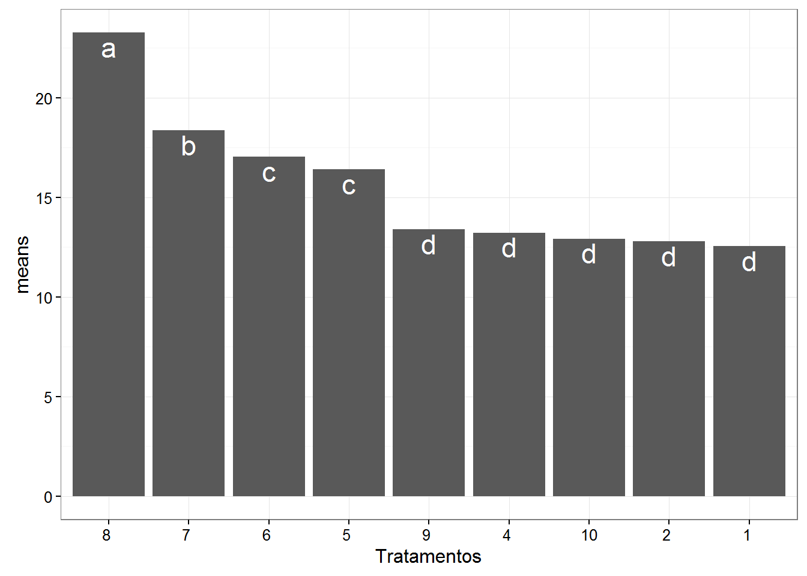
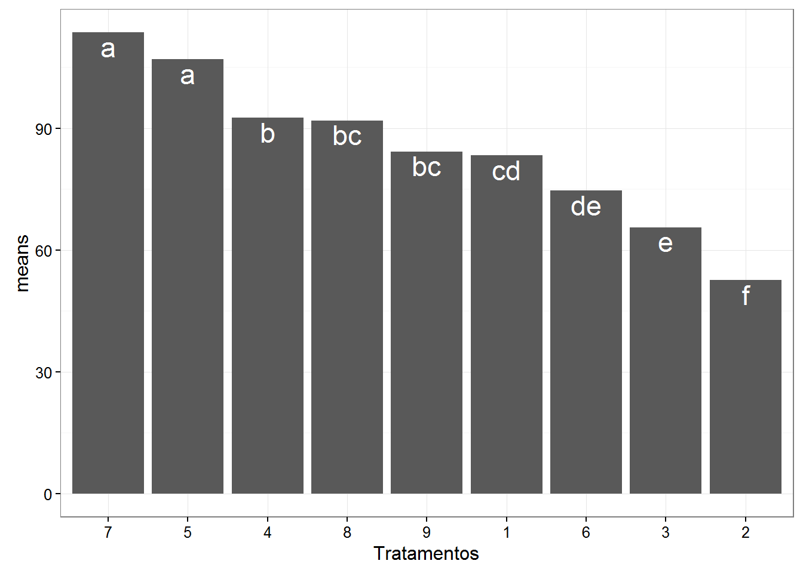
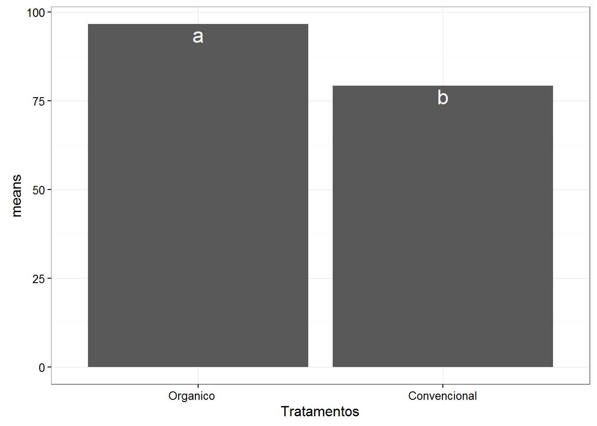
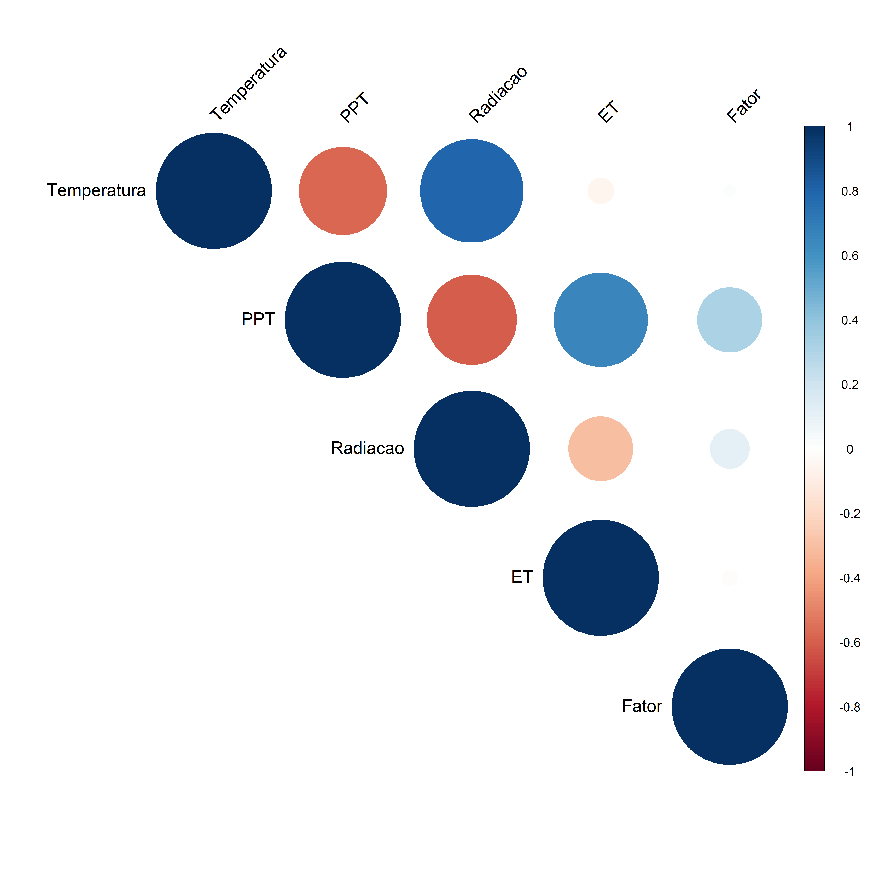
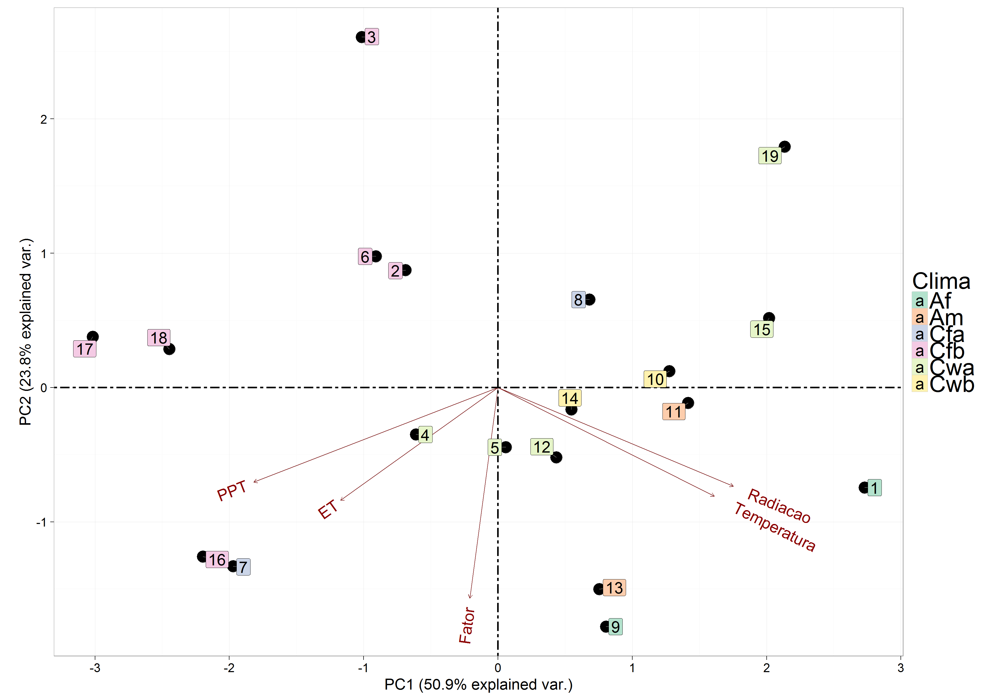
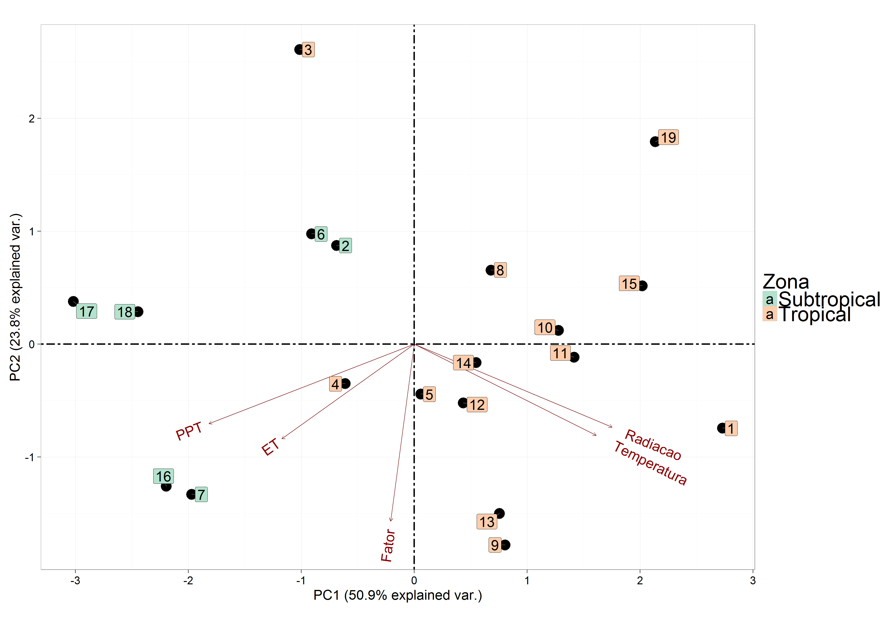
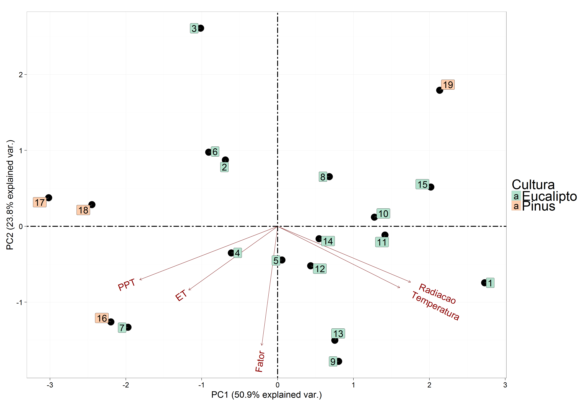

pacman::p_load(readr, dplyr, tidyr, broom, ggplot2, car, agricolae, ExpDes.pt)padrao <- read_csv2("dados/absorbancia_padrao.csv")## Parsed with column specification:
## cols(
## grupo = col_integer(),
## concentracao = col_double(),
## absorbancia = col_double()
## )padrao## # A tibble: 10 x 3
## grupo concentracao absorbancia
## <int> <dbl> <dbl>
## 1 1 0.0 0.000
## 2 1 0.2 0.122
## 3 1 0.4 0.250
## 4 1 0.6 0.460
## 5 1 0.8 0.650
## 6 1 1.0 0.820
## 7 2 0.0 0.000
## 8 2 0.1 0.060
## 9 2 0.2 0.122
## 10 2 0.4 0.250leitura <- read_csv2("dados/absorbancia_leitura.csv")## Parsed with column specification:
## cols(
## grupo = col_integer(),
## amotra = col_character(),
## repeticao = col_integer(),
## absorbancia = col_double()
## )leitura## # A tibble: 45 x 4
## grupo amotra repeticao absorbancia
## <int> <chr> <int> <dbl>
## 1 1 A1 1 0.545
## 2 1 A1 2 0.500
## 3 1 A1 3 0.545
## 4 1 A2 4 0.589
## 5 1 A2 5 0.600
## 6 1 A2 6 0.580
## 7 1 A3 7 0.520
## 8 1 A3 8 0.532
## 9 1 A3 9 0.587
## 10 1 B1 1 0.780
## # ... with 35 more rowsggplot(padrao, aes(absorbancia, concentracao)) +
geom_point() +
geom_smooth(method = "lm") +
stat_poly_eq(aes(label = paste(..eq.label.., ..rr.label.., sep = "~~~~")), formula = y ~ x, parse = TRUE) +
facet_wrap(~grupo)
grupo1 <- lm(concentracao ~ absorbancia, data = filter(padrao, grupo == 1))
glance(grupo1)## r.squared adj.r.squared sigma statistic p.value df logLik
## 1 0.991195 0.9889937 0.03925405 450.2856 2.915898e-05 2 12.12897
## AIC BIC deviance df.residual
## 1 -18.25793 -18.88266 0.006163523 4tidy(grupo1)## term estimate std.error statistic p.value
## 1 (Intercept) 0.04835099 0.02664263 1.814797 1.437434e-01
## 2 absorbancia 1.17719117 0.05547572 21.219935 2.915898e-05grupo2 <- lm(concentracao ~ absorbancia, data = filter(padrao, grupo == 2))
glance(grupo2)## r.squared adj.r.squared sigma statistic p.value df logLik
## 1 0.9997803 0.9996704 0.003100507 9100.121 0.0001098705 2 18.8153
## AIC BIC deviance df.residual
## 1 -31.6306 -33.47171 1.922629e-05 2tidy(grupo2)## term estimate std.error statistic p.value
## 1 (Intercept) 0.002592636 0.002381102 1.088838 0.3899437074
## 2 absorbancia 1.596364484 0.016734335 95.394555 0.0001098705grupos <- padrao %>%
group_by(grupo) %>%
do(ajuste = lm(concentracao ~ absorbancia, data = .))
grupos## Source: local data frame [2 x 2]
## Groups: <by row>
##
## # A tibble: 2 x 2
## grupo ajuste
## * <int> <list>
## 1 1 <S3: lm>
## 2 2 <S3: lm>grupos %>% glance(ajuste)## Source: local data frame [2 x 12]
## Groups: grupo [2]
##
## grupo r.squared adj.r.squared sigma statistic p.value df
## <int> <dbl> <dbl> <dbl> <dbl> <dbl> <int>
## 1 1 0.9911950 0.9889937 0.039254055 450.2856 2.915898e-05 2
## 2 2 0.9997803 0.9996704 0.003100507 9100.1212 1.098705e-04 2
## # ... with 5 more variables: logLik <dbl>, AIC <dbl>, BIC <dbl>,
## # deviance <dbl>, df.residual <int>grupos %>% tidy(ajuste)## Source: local data frame [4 x 6]
## Groups: grupo [2]
##
## grupo term estimate std.error statistic p.value
## <int> <chr> <dbl> <dbl> <dbl> <dbl>
## 1 1 (Intercept) 0.048350987 0.026642635 1.814797 1.437434e-01
## 2 1 absorbancia 1.177191172 0.055475721 21.219935 2.915898e-05
## 3 2 (Intercept) 0.002592636 0.002381102 1.088838 3.899437e-01
## 4 2 absorbancia 1.596364484 0.016734335 95.394555 1.098705e-04grupos %>%
augment(ajuste, newdata = leitura) %>%
select(-.se.fit, concentracao = .fitted)## Source: local data frame [90 x 5]
## Groups: grupo [2]
##
## grupo amotra repeticao absorbancia concentracao
## <int> <chr> <int> <dbl> <dbl>
## 1 1 A1 1 0.545 0.6899202
## 2 1 A1 2 0.500 0.6369466
## 3 1 A1 3 0.545 0.6899202
## 4 1 A2 4 0.589 0.7417166
## 5 1 A2 5 0.600 0.7546657
## 6 1 A2 6 0.580 0.7311219
## 7 1 A3 7 0.520 0.6604904
## 8 1 A3 8 0.532 0.6746167
## 9 1 A3 9 0.587 0.7393622
## 10 1 B1 1 0.780 0.9665601
## # ... with 80 more rowspacman::p_load(readr, dplyr, ggplot2, car, ExpDes.pt)brix <- read_csv2("dados/brix.csv") %>%
mutate(amostra = as.factor(amostra))## Parsed with column specification:
## cols(
## amostra = col_integer(),
## repeticao = col_integer(),
## brix = col_double(),
## temperatura = col_double(),
## ph = col_double()
## )brix## # A tibble: 27 x 5
## amostra repeticao brix temperatura ph
## <fctr> <int> <dbl> <dbl> <dbl>
## 1 1 1 12.6 25.0 6.7
## 2 1 2 12.7 24.0 6.5
## 3 1 3 12.4 25.0 6.7
## 4 2 1 12.6 24.3 6.2
## 5 2 2 12.8 24.5 6.0
## 6 2 3 13.0 24.0 6.1
## 7 4 1 13.0 22.0 6.2
## 8 4 2 13.5 22.5 6.1
## 9 4 3 13.2 22.5 6.0
## 10 5 1 16.4 24.0 6.8
## # ... with 17 more rows# teste de homogeneidade
leveneTest(brix ~ amostra, data=brix)## Levene's Test for Homogeneity of Variance (center = median)
## Df F value Pr(>F)
## group 8 0.709 0.6807
## 18# analise de variancia
brix_anova <- aov(brix ~ amostra, data=brix)# teste de normalidade
shapiro.test(resid(brix_anova))##
## Shapiro-Wilk normality test
##
## data: resid(brix_anova)
## W = 0.93131, p-value = 0.07441summary(brix_anova)## Df Sum Sq Mean Sq F value Pr(>F)
## amostra 8 311.11 38.89 246.5 <2e-16 ***
## Residuals 18 2.84 0.16
## ---
## Signif. codes: 0 '***' 0.001 '**' 0.01 '*' 0.05 '.' 0.1 ' ' 1brix_tukey <- HSD.test(brix_anova, "amostra")
brix_tukey## $statistics
## Mean CV MSerror HSD
## 15.55556 2.553509 0.1577778 1.136382
##
## $parameters
## Df ntr StudentizedRange alpha test name.t
## 18 9 4.955209 0.05 Tukey amostra
##
## $means
## brix std r Min Max
## 1 12.56667 0.15275252 3 12.4 12.7
## 10 12.93333 0.05773503 3 12.9 13.0
## 2 12.80000 0.20000000 3 12.6 13.0
## 4 13.23333 0.25166115 3 13.0 13.5
## 5 16.40000 0.40000000 3 16.0 16.8
## 6 17.03333 0.35118846 3 16.7 17.4
## 7 18.36667 0.92915732 3 17.3 19.0
## 8 23.26667 0.23094011 3 23.0 23.4
## 9 13.40000 0.30000000 3 13.1 13.7
##
## $comparison
## NULL
##
## $groups
## trt means M
## 1 8 23.26667 a
## 2 7 18.36667 b
## 3 6 17.03333 c
## 4 5 16.40000 c
## 5 9 13.40000 d
## 6 4 13.23333 d
## 7 10 12.93333 d
## 8 2 12.80000 d
## 9 1 12.56667 dbrix_tukey$groups %>%
ggplot(aes(reorder(trt, means, function(x) -mean(x)), means)) +
geom_bar(stat = "identity") +
geom_text(aes(label = M), vjust = 1.2, size = 6, color = "white") +
labs(x = "Tratamentos", "Média") +
theme_bw()
with(brix, dic(amostra, brix, quali = T))## ------------------------------------------------------------------------
## Quadro da analise de variancia
## ------------------------------------------------------------------------
## GL SQ QM Fc Pr>Fc
## Tratamento 8 311.11 38.888 246.47 8.7083e-17
## Residuo 18 2.84 0.158
## Total 26 313.95
## ------------------------------------------------------------------------
## CV = 2.55 %
##
## ------------------------------------------------------------------------
## Teste de normalidade dos residuos (Shapiro-Wilk)
## p-valor: 0.07440526
## De acordo com o teste de Shapiro-Wilk a 5% de significancia, os residuos podem ser considerados normais.
## ------------------------------------------------------------------------
##
## Teste de Tukey
## ------------------------------------------------------------------------
## Grupos Tratamentos Medias
## a 8 23.26667
## b 7 18.36667
## c 6 17.03333
## c 5 16.4
## d 9 13.4
## d 4 13.23333
## d 10 12.93333
## d 2 12.8
## d 1 12.56667
## ------------------------------------------------------------------------pacman::p_load(readr, dplyr, ggplot2, car)icumsa <- read_csv2("dados/icumsa.csv") %>%
mutate_at(vars(amostra, tipo), as.factor) ## Parsed with column specification:
## cols(
## amostra = col_integer(),
## repeticao = col_integer(),
## tipo = col_character(),
## icumsa_leitura = col_integer()
## )icumsa## # A tibble: 27 x 4
## amostra repeticao tipo icumsa_leitura
## <fctr> <int> <fctr> <int>
## 1 1 1 Convencional 80
## 2 1 2 Convencional 86
## 3 1 3 Convencional 84
## 4 2 1 Convencional 50
## 5 2 2 Convencional 52
## 6 2 3 Convencional 56
## 7 3 1 Convencional 62
## 8 3 2 Convencional 70
## 9 3 3 Convencional 65
## 10 4 1 Convencional 90
## # ... with 17 more rows# teste de homogeneidade
leveneTest(icumsa_leitura ~ tipo, data = icumsa)## Levene's Test for Homogeneity of Variance (center = median)
## Df F value Pr(>F)
## group 1 1.4199 0.2446
## 25leveneTest(icumsa_leitura ~ amostra, data = icumsa)## Levene's Test for Homogeneity of Variance (center = median)
## Df F value Pr(>F)
## group 8 0.0877 0.9992
## 18# analise de variancia
icumsa_anova <- aov(icumsa_leitura ~ tipo + amostra, data = icumsa)# teste de normalidade
shapiro.test(resid(icumsa_anova))##
## Shapiro-Wilk normality test
##
## data: resid(icumsa_anova)
## W = 0.91925, p-value = 0.03788summary(icumsa_anova)## Df Sum Sq Mean Sq F value Pr(>F)
## tipo 1 1803 1802.7 181.6 7.63e-11 ***
## amostra 7 7025 1003.6 101.1 3.81e-13 ***
## Residuals 18 179 9.9
## ---
## Signif. codes: 0 '***' 0.001 '**' 0.01 '*' 0.05 '.' 0.1 ' ' 1icumsa_tukey_amostra <- HSD.test(icumsa_anova, "amostra")
icumsa_tukey_amostra## $statistics
## Mean CV MSerror HSD
## 85.11111 3.701683 9.925926 9.013364
##
## $parameters
## Df ntr StudentizedRange alpha test name.t
## 18 9 4.955209 0.05 Tukey amostra
##
## $means
## icumsa_leitura std r Min Max
## 1 83.33333 3.055050 3 80 86
## 2 52.66667 3.055050 3 50 56
## 3 65.66667 4.041452 3 62 70
## 4 92.66667 3.055050 3 90 96
## 5 107.00000 3.000000 3 104 110
## 6 74.66667 3.055050 3 72 78
## 7 113.66667 3.214550 3 110 116
## 8 92.00000 2.000000 3 90 94
## 9 84.33333 3.511885 3 81 88
##
## $comparison
## NULL
##
## $groups
## trt means M
## 1 7 113.66667 a
## 2 5 107.00000 a
## 3 4 92.66667 b
## 4 8 92.00000 bc
## 5 9 84.33333 bc
## 6 1 83.33333 cd
## 7 6 74.66667 de
## 8 3 65.66667 e
## 9 2 52.66667 ficumsa_tukey_amostra$groups %>%
ggplot(aes(reorder(trt, means, function(x) -mean(x)), means)) +
geom_bar(stat = "identity") +
geom_text(aes(label = M), vjust = 1.2, size = 6, color = "white") +
labs(x = "Tratamentos", "Média") +
theme_bw()
icumsa_tukey_tipo <- HSD.test(icumsa_anova, "tipo")
icumsa_tukey_tipo## $statistics
## Mean CV MSerror HSD r.harmonic
## 85.11111 3.701683 9.925926 2.702214 12
##
## $parameters
## Df ntr StudentizedRange alpha test name.t
## 18 2 2.971152 0.05 Tukey tipo
##
## $means
## icumsa_leitura std r Min Max
## Convencional 79.33333 18.41036 18 50 110
## Organico 96.66667 13.42572 9 81 116
##
## $comparison
## NULL
##
## $groups
## trt means M
## 1 Organico 96.66667 a
## 2 Convencional 79.33333 bicumsa_tukey_tipo$groups %>%
ggplot(aes(reorder(trt, means, function(x) -mean(x)), means)) +
geom_bar(stat = "identity") +
geom_text(aes(label = M), vjust = 1.2, size = 6, color = "white") +
labs(x = "Tratamentos", "Média") +
theme_bw()
pacman::p_load(ggfortify, ggrepel, corrplot)
pacman::p_load_gh("vqv/ggbiplot")micro = read_csv2("dados/microbacia.csv")## Parsed with column specification:
## cols(
## Microbacia = col_integer(),
## Zona = col_character(),
## Clima = col_character(),
## Cultura = col_character(),
## Temperatura = col_double(),
## PPT = col_double(),
## Radiacao = col_double(),
## ET = col_double(),
## Fator = col_double()
## )micro## # A tibble: 19 x 9
## Microbacia Zona Clima Cultura Temperatura PPT Radiacao
## <int> <chr> <chr> <chr> <dbl> <dbl> <dbl>
## 1 1 Tropical Af Eucalipto 25.3 1128.60 19.2
## 2 2 Subtropical Cfb Eucalipto 18.8 1293.36 15.6
## 3 3 Tropical Cfb Eucalipto 18.8 1266.24 13.6
## 4 4 Tropical Cwa Eucalipto 19.2 1486.68 16.9
## 5 5 Tropical Cwa Eucalipto 20.7 1404.36 17.6
## 6 6 Subtropical Cfb Eucalipto 19.4 1467.84 15.7
## 7 7 Subtropical Cfa Eucalipto 18.6 1816.92 16.3
## 8 8 Tropical Cfa Eucalipto 20.6 1197.00 17.3
## 9 9 Tropical Af Eucalipto 24.4 1472.28 18.6
## 10 10 Tropical Cwb Eucalipto 19.8 1122.96 17.2
## 11 11 Tropical Am Eucalipto 23.4 1146.96 17.6
## 12 12 Tropical Cwa Eucalipto 20.7 1328.40 16.9
## 13 13 Tropical Am Eucalipto 23.4 1395.96 17.6
## 14 14 Tropical Cwb Eucalipto 19.8 1369.56 17.2
## 15 15 Tropical Cwa Eucalipto 20.6 1019.28 18.5
## 16 16 Subtropical Cfb Pinus 18.6 1716.24 14.9
## 17 17 Subtropical Cfb Pinus 16.0 1935.96 14.6
## 18 18 Subtropical Cfb Pinus 17.1 1839.36 15.0
## 19 19 Tropical Cwa Pinus 20.6 1019.28 18.5
## # ... with 2 more variables: ET <dbl>, Fator <dbl>corr = cor(select(micro, 5:9))
corrplot(corr, type="upper", order="original",
tl.col="black", tl.srt=45,
tl.cex = 2.8, cl.cex = 2)
pca = princomp(select(micro, 5:9), cor = T)
summary(pca)## Importance of components:
## Comp.1 Comp.2 Comp.3 Comp.4 Comp.5
## Standard deviation 1.5958307 1.0914811 0.9928976 0.43806872 0.2902473
## Proportion of Variance 0.5093352 0.2382662 0.1971691 0.03838084 0.0168487
## Cumulative Proportion 0.5093352 0.7476013 0.9447705 0.98315130 1.0000000loadings(pca)##
## Loadings:
## Comp.1 Comp.2 Comp.3 Comp.4 Comp.5
## Temperatura 0.500 -0.367 -0.381 0.443 0.524
## PPT -0.564 -0.319 -0.411 0.640
## Radiacao 0.544 -0.334 -0.748 -0.171
## ET -0.364 -0.381 -0.689 -0.490
## Fator -0.712 0.612 0.263 -0.215
##
## Comp.1 Comp.2 Comp.3 Comp.4 Comp.5
## SS loadings 1.0 1.0 1.0 1.0 1.0
## Proportion Var 0.2 0.2 0.2 0.2 0.2
## Cumulative Var 0.2 0.4 0.6 0.8 1.0ggbiplot(pca, obs.scale = 1, var.scale = 1, varname.size = 8) +
geom_point(size = 8) +
geom_vline(xintercept = 0, size = 1.2, linetype = 6) +
geom_hline(yintercept = 0, size = 1.2, linetype = 6) +
geom_label_repel(aes(label = micro$Microbacia, fill = micro$Clima), size = 8) +
guides(fill=guide_legend(title= "Clima")) +
theme(legend.position="top") +
theme_bw(base_size = 22, base_family = "Helvetica") +
theme(panel.background = element_rect(fill = "transparent",colour = NA),
plot.background = element_rect(fill = "transparent",colour = NA),
legend.background = element_rect(fill = "transparent",colour = NA),
legend.key = element_rect(fill = "transparent"),
legend.text = element_text(size = rel(1.5)),
legend.title = element_text(size = rel(1.5))) +
scale_fill_brewer(palette="Pastel2") 
ggbiplot(pca, obs.scale = 1, var.scale = 1, varname.size = 8) +
geom_point(size = 8) +
geom_vline(xintercept = 0, size = 1.2, linetype = 6) +
geom_hline(yintercept = 0, size = 1.2, linetype = 6) +
geom_label_repel(aes(label = micro$Microbacia, fill = micro$Zona), size = 8) +
guides(fill=guide_legend(title= "Zona")) +
theme(legend.position="top") +
theme_bw(base_size = 22, base_family = "Helvetica") +
theme(panel.background = element_rect(fill = "transparent",colour = NA),
plot.background = element_rect(fill = "transparent",colour = NA),
legend.background = element_rect(fill = "transparent",colour = NA),
legend.key = element_rect(fill = "transparent"),
legend.text = element_text(size = rel(1.5)),
legend.title = element_text(size = rel(1.5))) +
scale_fill_brewer(palette="Pastel2") 
ggbiplot(pca, obs.scale = 1, var.scale = 1, varname.size = 8) +
geom_point(size = 8) +
geom_vline(xintercept = 0, size = 1.2, linetype = 6) +
geom_hline(yintercept = 0, size = 1.2, linetype = 6) +
geom_label_repel(aes(label = micro$Microbacia, fill = micro$Cultura), size = 8) +
guides(fill=guide_legend(title= "Cultura")) +
theme(legend.position="top") +
theme_bw(base_size = 22, base_family = "Helvetica") +
theme(panel.background = element_rect(fill = "transparent",colour = NA),
plot.background = element_rect(fill = "transparent",colour = NA),
legend.background = element_rect(fill = "transparent",colour = NA),
legend.key = element_rect(fill = "transparent"),
legend.text = element_text(size = rel(1.5)),
legend.title = element_text(size = rel(1.5))) +
scale_fill_brewer(palette="Pastel2") 